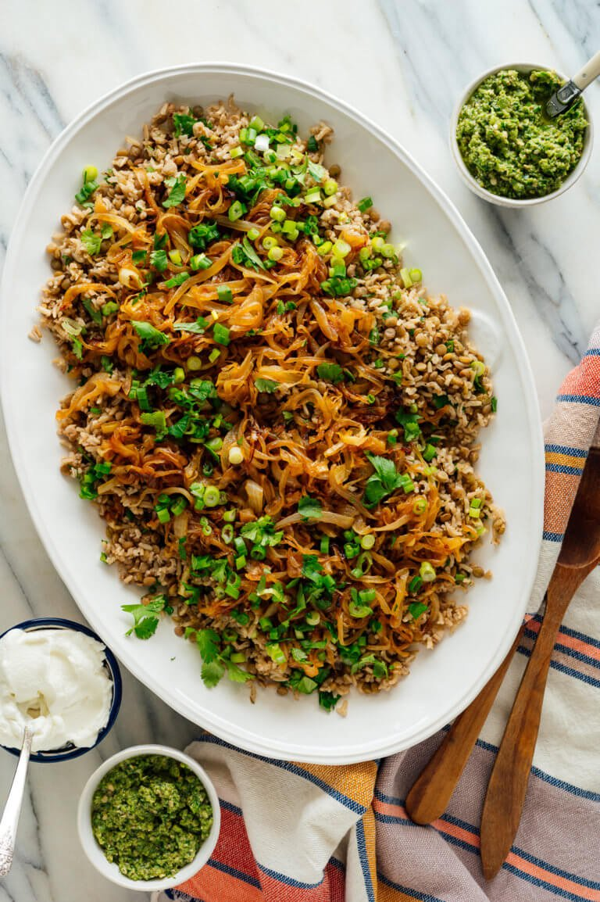

Middle Eastern Mujadara

What is Mujadara?
Mujaddara is the Arabic word for "pockmarked"; the lentils among the rice resemble pockmarks. The first recorded recipe for mujaddara appears in Kitab al-Tabikh, a cookbook compiled in 1226 by al-Baghdadi in Iraq. Containing rice, lentils, and meat, it was served this way during celebrations. Without meat, it was a medieval Arab dish commonly consumed by the poor, reputed to be a derivative of the "mess of pottage" Jacob used to buy Esau's birthright. Because of its importance in the diet, a saying in the Eastern Arab world is, "A hungry man would be willing to sell his soul for a dish of mujaddara." Mujaddara is a popular dish throughout the Arab world, and is generally made using brown or green lentils and rice, that can be seasoned with cumin, coriander, or mint. It is topped with fried onions and is generally served with yogurt, among other vegetables and side dishes, either hot or cold.
Ingredients
- 4 medium cloves garlic, smashed and peeled
- 2 bay leaves
- 1 tablespoon ground cumin
- 2 teaspoons sea salt
- Freshly ground black pepper
- 5 cups water
- 1 cup brown basmati rice
- 1 cup regular brown or green lentils
- 1/2 cup extra-virgin olive oil
- 2 medium-to-large yellow onions, halved and thinly sliced
- 1/2 cup thinkly sliced green onions (from 1 bunch)
- 1/2 cup chopped fresh coriander or parsley
- Plain whole milk or Greek yoghurt, for serving
Steps
- In a large Dutch oven or soup pot, combine the garlic, bay leaves, cumin, 1 ½ teaspoons of the salt and about 20 twists of freshly ground black pepper. Add the water and bring the mixture to a boil over medium-high heat.
- Once boiling, stir in the rice and reduce the heat to medium. Cover and cook, stirring occasionally and adjusting the heat as necessary to maintain a controlled simmer, for 10 minutes.
- Stir in the lentils and let the mixture return to a simmer. Cover again, reduce the heat to medium-low, and cook until the liquid is absorbed and the rice and lentils are tender, about 20 to 23 minutes.
- Meanwhile, warm the olive oil in a large (12-inch) skillet over medium-high heat. When it's warm enough that a slice of onion sizzles on contact, add the remaining onions. Stir to combine.
- Stir only every 3 minutes or so at first, then more often once the onions at the edges of the pan start browning. If the onions are browning before they have softened, dial down the heat to give them more time. Cook until the onions are deeply caramelized and starting to crisp at the edges, about 20 to 30 minutes. In the meantime, line a large plate or cutting board with a couple paper towels.
- Using a slotted spoon or fish spatula, transfer the onions to the lined plate and spread them evenly across. Sprinkle the remaining ¼ teaspoon salt over the onions. They'll crisp up as they cool.
- When the lentils and rice are done cooking, drain off any excess water (if there is any) and return the mixture to the pot, off the heat. Lay a kitchen towel across the top of the pot to absorb steam, then cover the pot and let it rest for 10 minutes.
- Remove the lid, discard the bay leaves, and smash the garlic cloves against the side of the pan with a fork. Add about ¾ths of the green onions and cilantro, reserving the rest for garnish. Gently stir and fluff the rice with a fork. Season to taste with additional salt and pepper, if necessary.
- Transfer the rice and lentil mixture to a large serving platter or bowl. Top with the caramelized onions and the remaining green onions and cilantro. Serve hot, warm or at room temperature, with yogurt and spicy sauce (optional) on the side.
- Enjoy!
Return Home